Predicting processor performance
r
data <- read.table("../data/training.csv", sep = ",")
preds = c("Width", "ROBSize", "IQSize", "LSQSize", "RFSize", "RFReadPorts",
"RFWritePorts", "GshareSize", "BTBSize", "BranchesAllowed", "L1Icache",
"L1Dcache", "L2Ucache", "Depth")
vars = c(preds, "Delay")
names(data) = vars
Visualizing the dataset
r
plot(data$Delay)
r
plot(density(data$Delay))
r
plot(density(log(data$Delay)))
r
plot(density(data$Width))
r
plot(density(data$ROBSize))
r
plot(density(data$IQSize))
r
plot(density(data$LSQSize))
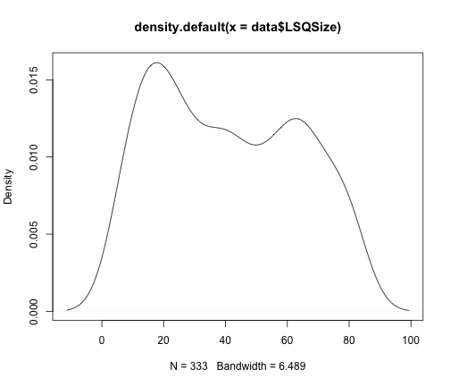
r
plot(density(data$RFSize))
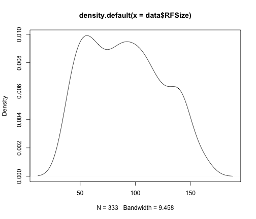
r
plot(density(data$RFReadPorts))
r
plot(density(data$RFWritePorts))
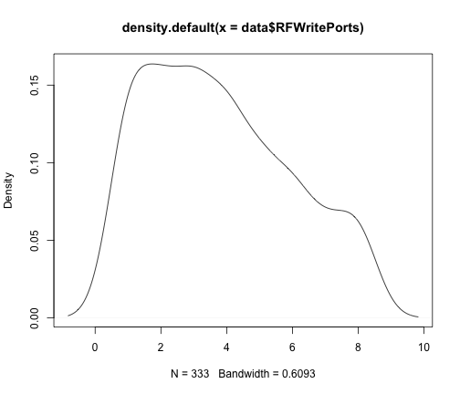
r
plot(density(data$GshareSize))
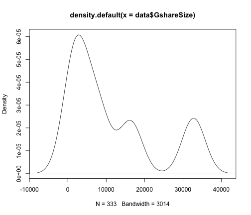
r
plot(density(data$BTBSize))
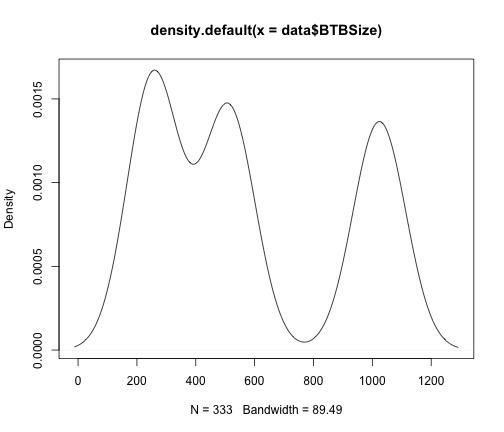
r
plot(density(data$BranchesAllowed))
r
plot(density(data$L1Icache))
r
plot(density(data$L1Dcache))
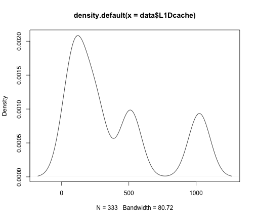
r
plot(density(data$L2Ucache))
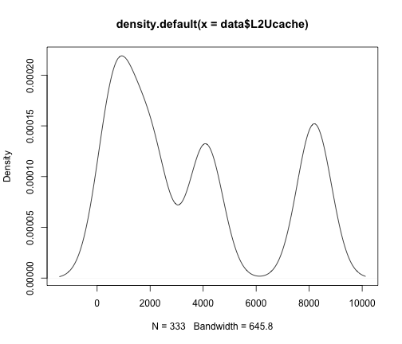
r
plot(density(data$Depth))
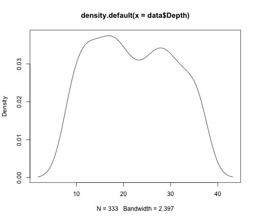
Conclusion: a logarithmic transformation of our target variable Delay seems to be appropriate.
Also, there are no outliers in Delay.
Getting relative variable importance using trees
r
require(party)
```
Loading required package: party
```
```
Loading required package: methods
```
```
Loading required package: survival
```
```
Loading required package: splines
```
```
Loading required package: grid
```
```
Loading required package: modeltools
```
```
Loading required package: stats4
```
```
Loading required package: coin
```
```
Loading required package: mvtnorm
```
```
Loading required package: zoo
```
```
Attaching package: 'zoo'
```
```
The following object is masked from 'package:base':
as.Date, as.Date.numeric
```
```
Loading required package: sandwich
```
```
Loading required package: strucchange
```
```
Loading required package: vcd
```
```
Loading required package: MASS
```
```
Loading required package: colorspace
```
r
require(lattice)
```
Loading required package: lattice
```
r
data.forest <- cforest(Delay ~ ., data = data[, vars])
data.varimp <- sort(varimp(data.forest))
dotplot(data.varimp)
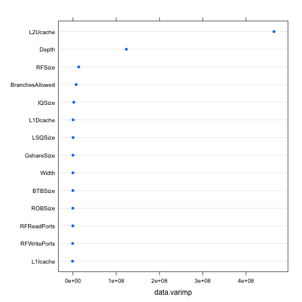
r
data.tree <- ctree(Delay ~ ., data = data[, vars])
plot(data.tree)
Conclusion: L2Ucache and Depth are the important variables
Visualize L2Ucache and Depth
r
plot(data$Delay ~ data$L2Ucache)
r
plot(log(data$Delay) ~ data$L2Ucache)
r
plot(data$Delay ~ data$Depth)
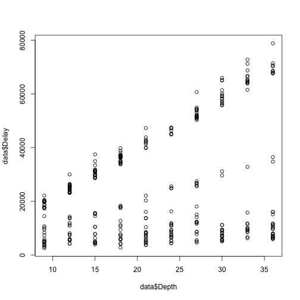
r
plot(log(data$Delay) ~ data$Depth)
Conclusion: L2Ucache seems not to have linear influence.
Depth might interact with a variable.
Defining utility functions
```r
root mean square error
rmse <- function(y, yhat) {
return(sqrt(mean((y - yhat)^2)))
}
cross validation using RMSE returns mean of the k RMSEs
crossValidateLM <- function(formula, fullData, k = 10) {
group <- sample(1:k, nrow(fullData), replace = TRUE)
# groupedData <- split(fullData,groups)
responseVariable <- all.vars(formula)[1]
errors <- c()
for (i in 1:k) {
model <- lm(formula, data = fullData[group != i, ])
predictions <- predict(model, fullData[group == i, ])
errors <- c(errors, rmse(data[group == i, c(responseVariable)], predictions))
}
return(mean(errors))
}
```
Using Linear Regression
With all predictors linear.
r
formula = as.formula("Delay~.")
data.lm <- lm(formula, data = data)
summary(data.lm)
```
Call:
lm(formula = formula, data = data)
Residuals:
Min 1Q Median 3Q Max
-30544 -7531 371 8429 31120
Coefficients:
Estimate Std. Error t value Pr(>|t|)
(Intercept) 3.24e+04 5.02e+03 6.46 4.0e-10 *
Width -3.61e+00 4.64e+02 -0.01 0.9938
ROBSize 2.69e+01 2.20e+01 1.22 0.2232
IQSize -5.74e+01 2.99e+01 -1.92 0.0560 .
LSQSize -7.32e+00 2.89e+01 -0.25 0.8002
RFSize -9.36e+01 2.05e+01 -4.56 7.3e-06 *
RFReadPorts 9.57e+01 1.69e+02 0.56 0.5727
RFWritePorts -1.97e+02 3.31e+02 -0.60 0.5513
GshareSize 8.07e-02 5.96e-02 1.35 0.1766
BTBSize 5.50e-01 2.12e+00 0.26 0.7952
BranchesAllowed -1.96e+02 7.44e+01 -2.64 0.0086 **
L1Icache -1.95e+00 1.97e+00 -0.99 0.3237
L1Dcache 1.91e+00 1.95e+00 0.98 0.3261
L2Ucache -4.72e+00 2.31e-01 -20.43 < 2e-16 *
Depth 9.06e+02 7.89e+01 11.48 < 2e-16 *
---
Signif. codes: 0 '' 0.001 '' 0.01 '' 0.05 '.' 0.1 ' ' 1
Residual standard error: 11900 on 318 degrees of freedom
Multiple R-squared: 0.651, Adjusted R-squared: 0.635
F-statistic: 42.3 on 14 and 318 DF, p-value: <2e-16
```
r
crossValidateLM(formula, data)
```
[1] 12290
```
```r
formula = as.formula("log(Delay)~.")
data.lm <- lm(formula, data = data)
summary(data.lm)
```
```
Call:
lm(formula = formula, data = data)
Residuals:
Min 1Q Median 3Q Max
-1.3025 -0.3059 0.0996 0.3703 1.2227
Coefficients:
Estimate Std. Error t value Pr(>|t|)
(Intercept) 1.06e+01 2.14e-01 49.29 < 2e-16 *
Width -1.47e-02 1.98e-02 -0.74 0.4583
ROBSize 1.51e-03 9.42e-04 1.60 0.1095
IQSize -3.02e-03 1.28e-03 -2.36 0.0189 *
LSQSize 3.97e-04 1.24e-03 0.32 0.7482
RFSize -4.56e-03 8.78e-04 -5.20 3.6e-07 *
RFReadPorts 5.10e-03 7.25e-03 0.70 0.4819
RFWritePorts -1.41e-02 1.41e-02 -1.00 0.3204
GshareSize 3.54e-06 2.55e-06 1.39 0.1655
BTBSize -4.62e-05 9.05e-05 -0.51 0.6100
BranchesAllowed -1.03e-02 3.18e-03 -3.25 0.0013 **
L1Icache -1.68e-05 8.43e-05 -0.20 0.8424
L1Dcache 7.24e-05 8.32e-05 0.87 0.3851
L2Ucache -2.28e-04 9.88e-06 -23.11 < 2e-16 *
Depth 2.88e-02 3.37e-03 8.52 6.5e-16 *
---
Signif. codes: 0 '' 0.001 '' 0.01 '' 0.05 '.' 0.1 ' ' 1
Residual standard error: 0.51 on 318 degrees of freedom
Multiple R-squared: 0.682, Adjusted R-squared: 0.668
F-statistic: 48.7 on 14 and 318 DF, p-value: <2e-16
```
r
crossValidateLM(formula, data)
```
[1] 31544
```
Conclusion: many predictors not significant, log(response) performs worse
Select the significant selectors iteratively:
```r
formula = as.formula('Delay)~ Width+ ROBSize+ IQSize+ LSQSize+ RFSize+
RFReadPorts+ RFWritePorts+ GshareSize+ BTBSize+ BranchesAllowed+
L1Icache+ L1Dcache+ L2Ucache+ Depth')
formula = as.formula("Delay~\n IQSize+\n poly(RFSize,2)+\n BranchesAllowed+\n Depth+\n Depth:I(log(L2Ucache))")
data.lm <- lm(formula, data = data)
summary(data.lm)
```
```
Call:
lm(formula = formula, data = data)
Residuals:
Min 1Q Median 3Q Max
-30836 -6213 -117 5108 33312
Coefficients:
Estimate Std. Error t value Pr(>|t|)
(Intercept) 11656.1 2307.1 5.05 7.3e-07 *
IQSize -46.2 24.0 -1.93 0.0551 .
poly(RFSize, 2)1 -47535.9 9731.3 -4.88 1.6e-06 *
poly(RFSize, 2)2 26765.0 9753.0 2.74 0.0064 **
BranchesAllowed -191.8 59.0 -3.25 0.0013 **
Depth 5844.8 190.7 30.65 < 2e-16 *
Depth:I(log(L2Ucache)) -641.5 22.4 -28.63 < 2e-16 *
---
Signif. codes: 0 '' 0.001 '' 0.01 '' 0.05 '.' 0.1 ' ' 1
Residual standard error: 9670 on 326 degrees of freedom
Multiple R-squared: 0.765, Adjusted R-squared: 0.76
F-statistic: 177 on 6 and 326 DF, p-value: <2e-16
```
r
crossValidateLM(formula, data)
```
[1] 9664
```
r
bestModel = data.lm
plot(data$Delay, data$RFSize)
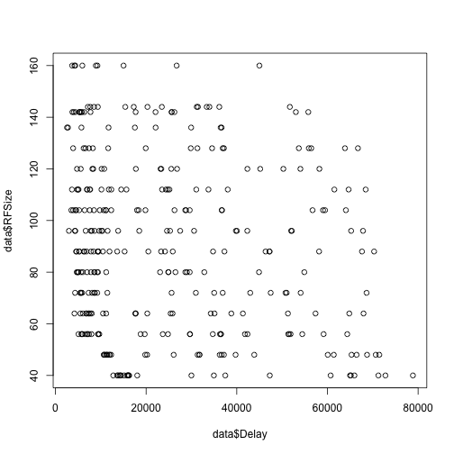
Conclusion: L2Ucache is a better predictor when log-transformed. Huge reduction of rmse when L2Ucache in interaction with Depth.
RFSize squared is significant.
Find the correct learning parameter
first normalize predictors
Predict labels for validation set
r
validation <- read.table("../data/validation.csv", sep = ",")
names(validation) <- preds
write.table(predict(bestModel, validation), file = "validationPreds.csv", row.names = FALSE,
col.names = FALSE)